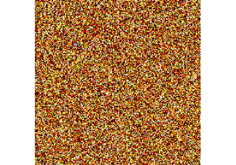
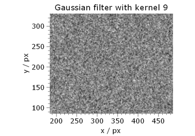
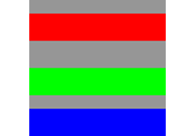
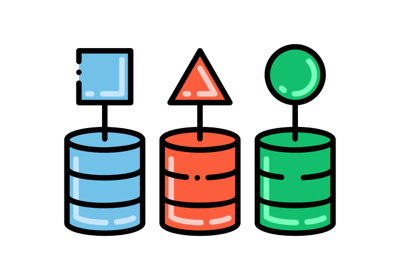
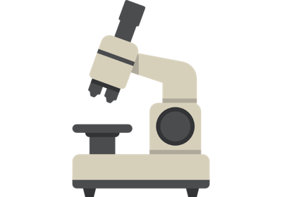
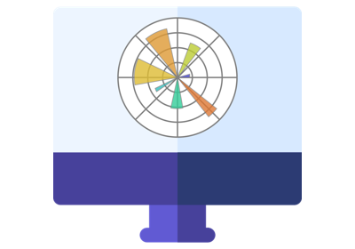
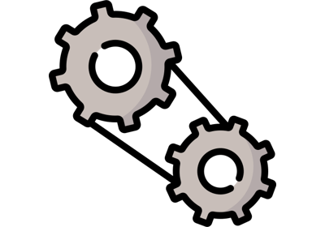
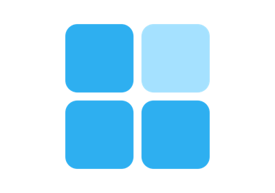

12.1. itom¶
This chapter shows how itom is based on Python as the scripting language and provides additional features in the context of measurement hardware control, measurement automation and user interface. Click on any image to see the full script documentation.
12.1.1. Basics¶
Timer

Convert falseColor

Cameras and images

Load and save dataObject


DataObject

Measurement
12.1.2. Data processing¶



Cross correlation of images
12.1.3. Matplotlib embedded¶


Matplotlib auto update

12.1.4. itom apps¶

12.1.5. Plots¶


12.1.6. Plugins¶



DummyMotor
Face Detection
12.1.7. PointCloud¶

12.1.8. User interface¶


12.1.9. Customize itom GUI¶
Toolbar
12.1.10. User interface dynamic layouts¶



Dynamic grid layout